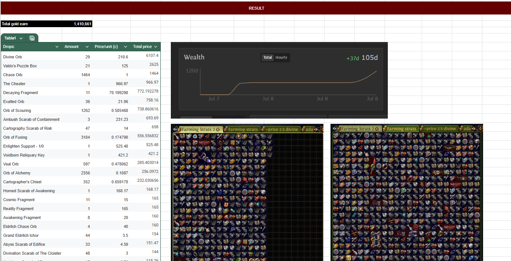

Cloud-Based System Deployment (DRB-Hicom Project)
A project initially developed during my internship and later expanded into a cloud-based solution as part of my final year project.
Problem
The system was originally deployed locally, limiting scalability and accessibility.
What I Did
Migrated and explored deploying the system using cloud platforms such as AWS/GCP, improving availability and scalability.
Tools Used
- AWS / GCP
- Cloud Deployment
- System Architecture
Outcome
Gained hands-on experience in cloud technologies and improved system flexibility.

Performance dashboard showing machine overall effectiveness.

Quality dashboard showing quality rate of product produced on daily basis.

MYSQL Database created in google cloud platform to fetch data

Node-RED backend fetching & processing the data into visualization dashboard
Team KPI Monitoring Dashboard
A self-initiated project to analyze and monitor team performance metrics, enabling better visibility of KPIs and supporting data-driven decision-making.
Problem
Limited visibility into team performance made it difficult to track progress toward annual targets.
What I Did
Built a KPI tracking system to monitor ticket volume, individual performance, and trends over time using structured data and reporting tools.
Tools Used
- Excel
- Power BI (if used)
- Data Visualization
Outcome
Improved visibility of team performance and supported a more data-driven, performance-focused work environment.

Real time KPI analysis
Gaming Market Analysis
A personal data analytics project where I collected and analyzed in-game market data to identify trends, pricing patterns, and strategies for earning in-game currency.
Problem
Players needed better visibility into market trends to make smarter trading decisions.
What I Did
I collected, organized, and analyzed item price data using Excel tables and visualizations. The findings were shared with the gaming community for deeper market analysis.
Tools Used
- Excel
- Data Cleaning
- Tables
- Data Visualization
Outcome
Created a structured analysis that helped users understand market behavior and identify better strategies for earning in-game currency.

Gaming market analysis